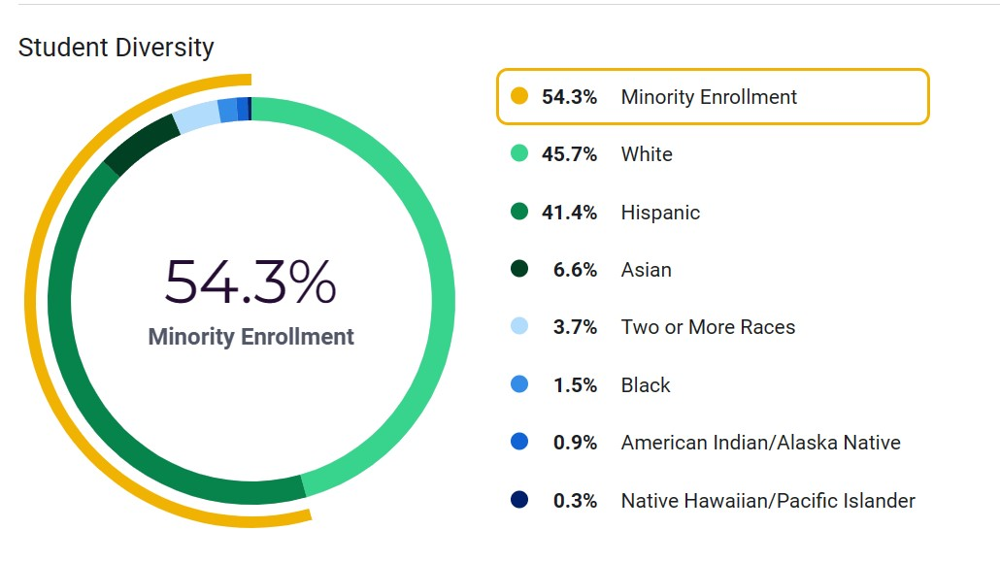

From the mountains of Evergreen, the suburbs of Morrison and Lakewood, to the western boundary of Denver; Bear Creek High School students come from rural, suburban and urban neighborhoods. Perhaps this is why BCHS has 62% diversity, according to Public School Review. Click on the census tract layers of the map to find out the non-white population of BCHS and surrounding Jefferson County and to see more statistics about Jeffco's population. Check the layers on the right side of the map to view BCHS and its neighborhood boundary.

Source: Best High Schools from USNews
Map data from: